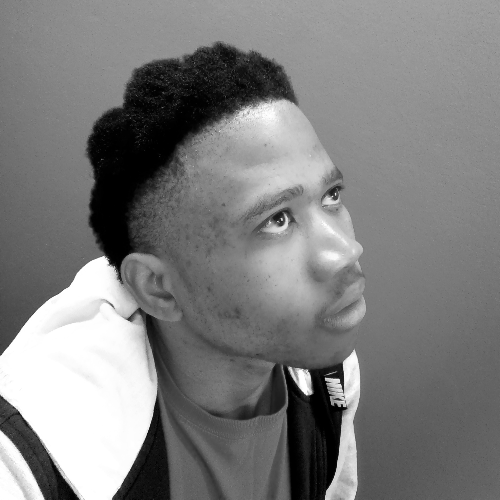
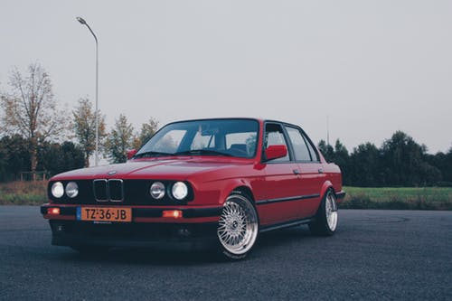
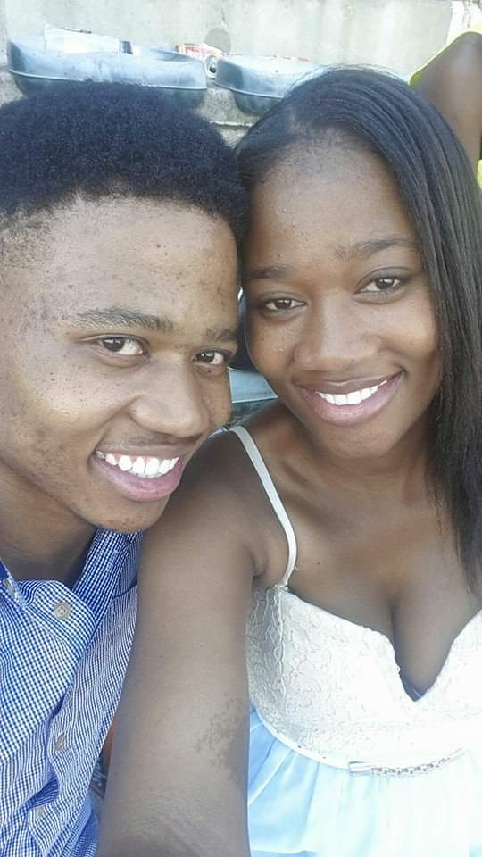

By Khutso Nkadimeng
17 Apr 2020
Shepherd Mampuru Modisha is a tech entrepreneur and founder of Johannesburg based autonomous vehicles software company Shepherd’s Eye.
Early Life
Shepherd was born on the 7th of April 1992 to flamboyant and legendary car spinners Ezekiel and Elizabeth Modisha in the village of GaModisha, 15 kilometres outside Polokwane, Limpopo. He grew up with his older sister Naledi in a middle-class family. The two siblings grew up competing against each other in everything from sports to video games, academics to motorsports. This is not by accident, it’s a culture carefully cultivated by their parents who were also fierce competitors on the streets in their Gusheshes
Shepherd began his formal education at Leboa primary School, he showed above average intelligence but was not much different to his peers. His competitive culture gave him an edge over other kids in sports and earned him a few medals in the process. He left Leboa for Dinaledi Secondary School at the age 12 and that was a particularly difficult year for Modisha family.
In the evening of the 20th of July 2004, Ezekiel “Pretty Easy” Modisha was tragically killed when his BMW 325i was hit on the driver's side by a minibus taxi killing him instantly. He was on his way home from collecting his son from a soccer game in Polokwane. In what can only be described as a miracle, Shepherd who was in the passenger seat came out of the car without a scratch, at least not a physical one. The sequence of events tortured Shepherd for years, seeing blood and glass shrapnel and immediately going blank whenever a Toyota Siyaya passed by. He blamed himself for his father’s death and his violent outburst at school landed him in police stations and his mother in tears on multiple occasions. His grades dropped dramatically but with the help of counselling and the two most powerful women in his life, he managed to forgive himself and use his loss as a fuel which would eventually land him in his current position.
Family History
To understand the Modisha family today, you must understand the five years between 1987 and 1992 that's when the legend of Pretty Easy and Professor Lizzy was born. The two shared love for performance art and met at the Soweto Theatre after a play written by Elizabeth was staged. Ezekiel was a world-class car mechanic who just opened shop recently, he was also a skilled driver and used his skills to impress the young writer who stole his heart. The two became inseparable, and Elizabeth quickly picked up the driving skills too. What turned the two lovebirds into township celebrities was the raising culture of spinning cars, which was lead by gangsters to show off their merchandise.
After stealing cars, gangsters would bring them to Ezekiel's shop to give them a new look, to him, it was just business in a brutal environment and not aiding a criminal enterprise. One day, by chance, Ezekiel showed his patrons he could spin their cars better than they could and they began asking him to do it more often. His girlfriend, a wordsmith with a flair for the theatrics thought turning the whole thing into an art performance was a better idea. And that’s how she pioneered stunt-spinning with herself as the main attraction. Their street performances attracted large crowds from all over the township. The nickname "Pretty Easy", comes from his shortened name Eze, and was inspired by the shiny cars coming out of his shop and his record of zero scratches during extreme performances.
“Professor Lizzy” was a homage to her academic prowess, she was a gifted writer and, on the streets, a skilled driver and impressive stunt performer. Their exploits are still the talk of the town to this day even after they left Soweto, but their gang affiliation and legal drama that surrounded them is now following their son.
High School and University

High school was a fertile ground for the young Shepherd, he chose Mathematics and Science as majors while experimenting with computers at home. However, the most exciting experiment he was conducting at the time was that of girls. In the classic high school competition of dating the most popular girl, Shepherd had an unfair advantage, his sister, a traitor who broke girls-pact and revealed all top secretes.
With the bag secured in the field of interpersonal relationships, he turned his attention to schoolwork and various competition. He was an excellent student averaging between 80 and 87% in class. Shepherd started the robotics club in his school to compete in the Innovation Expo, a prestigious competition in the field of software and technology. Due to lack of resources, the club relied on the community for support and they eventually won the competition in teams and individual categories.
The university years were both difficult and exciting, just like many students from rural schools he struggled to make it to the top of the academic hierarchy, becoming a B student. What made him stand out were his extracurricular activities, he drove between Braamfontein and Soweto to take part in drifting competitions and he won the Intervarsity Business Competition with an idea about a financial product for the unbanked. In his second year of electrical engineering, he started working on what we now know as Randalas.
Randalas
With one in every six working South Africans working in the informal sector and a 29% unemployment rate, the number of unbanked individuals in the country make a compelling business case. The social and economic case is even bigger, as a small business owner coming from a township or rural area looking for a loan to grow your business, the traditional banks will not take your house as collateral and will consequently reject your application. That is one of the many reasons making you a high-risk individual, you have no assets in the eyes of traditional banks.
To solve this problem, Shepherd and his friend Nare Phala decided to build business profiles for all major townships using government databases, consumer reports, social media and of course studying these places in person. They then used artificial intelligence and all this data to calculate risk when businesses from these areas made loans.
For personal loans what they did was simple and ingenious, they decentralised loan sharking, which is very well established in poor communities. This is how the market worked: you ask a loan and anyone within a few kilometres radius can borrow it to you. This reduced chances of non-payment because the participant knew each other, and disputes because there was a third party involved.
With profiles of all townships in Johannesburg, Pretoria, Cape Town, Durban and Polokwane, Randalas was sold to a major bank and continues to grow.
Shepherd’s Eye
Shepherd’s Eye is on the verge of becoming the most disruptive company in the automotive and transport industries, this, according to Shepherd, is the reason why he suddenly has many legal problems and old cases resurfacing. The company has been developing self-driving capabilities for cars and taxis for six years now. The company claims to be close to a Level 5 autonomy, thanks to 5G which enabled more data to be processed.
The autonomous package from Shepherd's Eye is designed to be compatible with all car brands, so in theory, any car owner can leave their steering wheel within the next six-seven months. The company currently has the system in 5000 cars and taxis on the road, collecting data and training its Artificial Intelligence.
Legal Troubles

Recently the Witwatersrand Post published a scathing article alleging that Shepherd was arrested for public endangerment. In 2010 the 18-year-old Shepherd was arrested with his sister Naledi for drag racing on the N1 highway. This was not a random or spontaneous event, it’s a family tradition pioneered by their parents in the late eighties to resolve once and for all who was the better driver. The case against the siblings disappeared and they were never charged.
Shepherd was arrested multiple times for violence and assault, he was 15 at the time and his defence argued that he was suffering from a post-traumatic stress disorder due to a car accident which ultimately killed his father, he won the case and his records were sealed because he was a minor. But what is bringing all these cases to light is the one allegation threatening to bring Shepherd down and decimate his support from both investors and die-hard fans. The Witwatersrand Post claims that Shepherds Eye is powered by stollen German technology, Shepheard allegedly used his driving skills and leveraged his proximity to township gangs in the drifting community to highjack the CEO of Nightlight, a German military contractor when he visited Johannesburg in 2010.
The municipal manager of the City of Johannesburg Kamogelo Kau has called for a probe into Shepherd’s Eye, and taxi boss Sipho Dlamini and the head of the National Workers Union Nkosinathi Khumalo announced that they have opened a criminal case against Modisha after consulting their lawyers.
Personal Life
Although he seems to surround himself with all kinds of women, Shepherd is known to love older ladies. He’s been dating Rethabile Mokwena on an on-off basis, a woman 8 years his senior. She’s a fierce and aggressive lawyer who founded the Johannesburg based security consulting company, Florence, which is now responsible for 70% of cash transit cars in Gauteng.
Shepherd’s best friend and reliable ally is his sister, just 4 days ago (13 April 2020) she announced on social media that she will be taking 9 months unpaid leave from her job to join Shepherd’s Eye as Chief Operations Officer. This coincides with Shepherd's legal problems and the fast-approaching product launch of his company. The two have been close from a young age and according to their mother, since they could effectively communicate with each other.